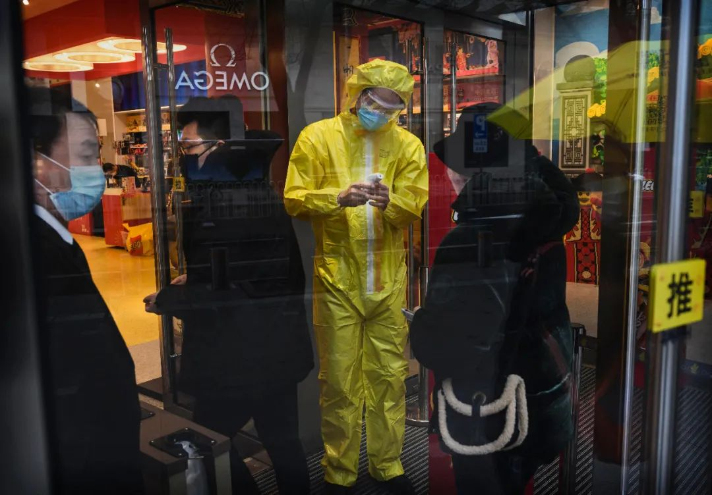
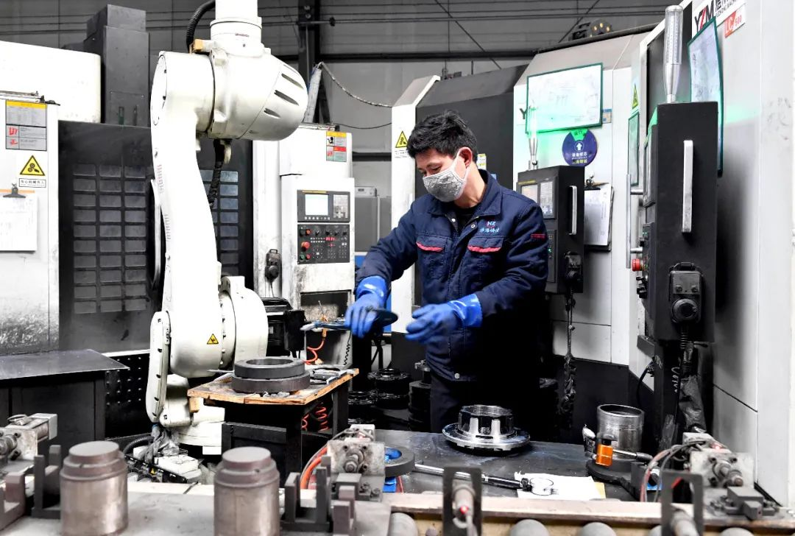
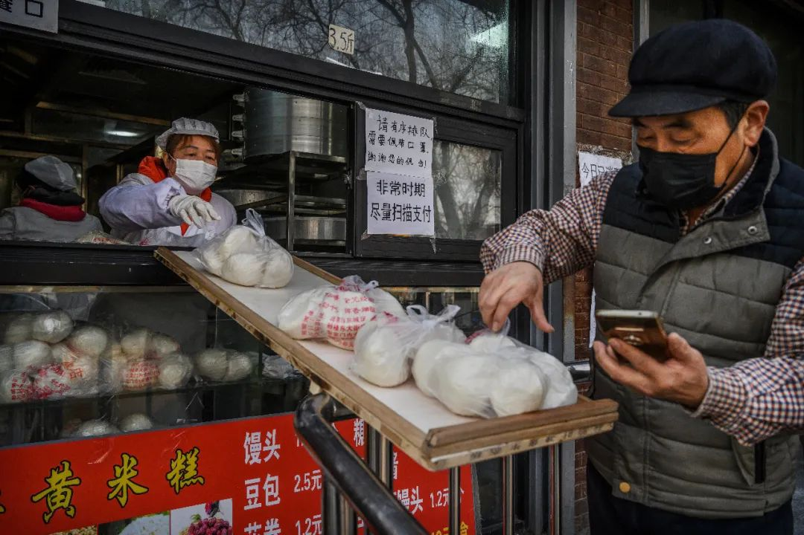

企业打响复工战
原文链接 备份链接 燃财经（ID:rancaijing）原创 作者 | 孟亚娜 编辑 | 凌远川 坐电梯像“吃火锅”，吃饭像“参加高考”，红外线测体温，脚踏式按键开门神器……近日，互联网公司的花式复工火了，网友大呼，太硬核了。 图片来源 …
学会和疫情相处，在疫情下生存
将是我们不得不接受的选择
新冠特刊系列3「准备复工」
点击下图，线上购买

点击上图，下单新刊「*准备复工*」
主笔 | 谢九
新冠肺炎爆发一个月之后，逐渐度过了最恐慌无序的阶段，2月13日以来，全国新增确诊人数和死亡人数都开始明显下降。虽然还不能说拐点已到，但最黑暗的时刻可以说已经过去。
在疫情取得阶段性成效之际，另外一个战场的伤害却开始越来越明显地暴露出来，那就是经济领域。由于疫情带来大规模人员隔离、物流阻断等等，很多行业陷入减速甚至停摆的困境。如果迟迟无法恢复正常的生产状态，疫情对经济的冲击，将很快从旅游、餐饮等个别行业向整体蔓延。**到时候，无论是国家、企业还是个人，都将感受到经济减速带来的痛苦。
**
要避免疫情在更大范围内扩散，甚至再度反弹，需要对人员的大规模流动有所控制，与此同时，重启中国经济的活力和动力，又需要人员尽快返岗复工，两个目标似乎构成了天然的对立。如何在二者之间取得平衡，这已经是一个不容回避而且刻不容缓的两难选择。

2月23日，一名商场服务员在等顾客时整理妆容。
如果经济活动迟迟无法恢复正常，中国经济到底会遭遇多大的伤害呢？
从消费来看，大量人员减少外出活动，除了最基本的消费之外，其余很多非必须的消费支出都大幅减少。即使最近部分人群开始走出家门，很多商家由于员工没有返岗，也无法给消费者提供足够的产品。也就是说，无论是需求端还是供给端，都同时出现了萎缩。
在中国经济的三驾马车中，消费已经成为第一大引擎，去年消费对GDP的贡献率达到了58%，如果疫情造成消费引擎长时间减速，对于中国经济的冲击不言而喻。疫情爆发之后，很多人都认为重灾区主要集中在旅游、餐饮等行业，但事实上，疫情的冲击范围之大超出想象。今年2月上旬，国内的汽车销量下降了92%，汽车是我国消费领域的传统大宗消费品，汽车销量的雪崩，可以看出疫情的冲击力到底有多强。

2月14日，一名商场工作人员在商场门口检查顾客体温。
从投资引擎来看，我国投资的三大主力是制造业、基建和房地产，这三大行业都属于劳动密集型，在疫情爆发的特殊时期，都很难做到快速满员复工。比如郑州富士康，厂区员工人数高达二三十万人，大规模复工无疑潜藏着较大风险。也正因为如此，很多富士康的员工迟迟不愿意返岗复工，以至于苹果公司发布公告，表示受到疫情影响，全球iPhone供应紧张，截至3月份的季度营收目标将无法实现。
从出口来看，最近几年，中国原本就面临较大的产业转移压力，东南亚和非洲等地已经承接了很多原本属于中国的外贸订单。在疫情期间，如果中国出口企业迟迟无法复工，全球产业链可能会向东南亚以及非洲等地加速转移。一旦产业链被替代，就很难再重新回来，很多出口型企业将遭受永久性伤害。
如果消费、投资和出口三大引擎都受到拖累，中国经济受到的冲击也就可想而知了。经济增速下滑，很快就会通过企业层面传递到个体，大部分个人都将感受到这场疫情带来的切肤之痛。

2月22日，富士康（太原）科技工业园职工乘坐“返岗直通车”，从家乡直达厂区，准备复工复产。
最近，很多行业裁员降薪的新闻已经屡见不鲜，疫情对普通民众的经济伤害已经浮出水面，而这还仅仅只是一个开始。目前为止，疫情爆发也才一个月时间，应该说，大部分企业的现金流才能够勉强支撑，裁员降薪的还只是少数，大部分企业选择和员工共克时艰。
但是，一旦经济停摆时间延长到2个月甚至3个月，这将是绝大多数中小企业的现金流极限。按照清华和北大最近的调研，有85%的中小企业现金流最多能支撑3个月。为了减轻成本压力，换取活下去的时间和空间，到时候将会有越来越多的企业选择裁员降薪。这也就意味着，未来一两个月才是真正的至暗时刻，如果不能及时复工，将会有越来越多的个体面临收入下降甚至失业的风险。
目前我国就业总人口为8亿多人，其中城镇就业人口约为4亿多，在城镇就业人口中，有3亿多人的就业由民营中小企业贡献。假设有80%的企业能够及时复工，剩余20%无法及时复工的企业裁员5%，对应的失业人口也高达300万人左右。由此也可以看出及时复工的紧迫性，复工的进度越往后推，企业被拖垮的概率越高，裁员的比例也就会越高。反之，**企业复工越快，裁员的压力就会越小。
**

截至2月21日，山东、浙江、江苏、福建等华东地区复工率都超过70%。
疫情之下，民众还可能不得不面临通胀风险。去年猪肉价格带动物价大幅上涨，去年年底的CPI指数一度高达4.5%，创下8年多的新高，很多人原本以为今年猪肉价格回落，物价形势会有所好转。但是，今年的物价还是来了一个“开门红”，1月份的CPI指数大幅上涨了5.4%，大大超出人们的预期。对于物价的超预期上涨，国家统计局的解释是“主要是受春节及新型冠状病毒感染的肺炎疫情因素影响。
一直以来，控制通货膨胀都是中国经济社会发展的核心目标之一，每年的《政府工作报告》在展望新年工作时，都会重点列出一个通胀目标，比如3%。无论是对于中国还是世界上其他国家，控制通胀都是经济社会发展的重中之重。如果发生严重通胀，不仅会影响民众的正常生活，甚至会诱发社会群体性事件。
如果中国经济不能及时复工，物价还有继续上涨的可能。首先是因为市场的供需平衡被严重破坏，为物价上涨打下了牢固的基础。从供给方来看，由于各行业无法正常复工，市场的供给大幅减少，加上疫情期间物流能力下降，更在很大程度上加剧了供给侧的难度。在疫情初期，市场的供给可能还能够依靠库存来缓解，但是越到后期，库存越少，供给矛盾就会越来越突出。
而从需求来看，虽然全国人民大规模隔离减少了消费需求，但是对最基本的食品需求并不会有任何减少，甚至可能还会大幅增加。在我国的CPI构成中，食品占据最大的比重，食品价格的上升，往往是物价上涨的最大动力来源。

2月19日，北京的一家主食商店提供“无接触”式服务。
疫情爆发之后，为了缓解企业压力，货币政策也开始有所松动，这也会为物价上涨注入动力。按照货币学大师弗里德曼的说法，所有的通货膨胀，归根结底都是货币现象。在去年货币政策相对紧缩的背景下，我国的物价指数在年底还创出了8年新高，如果今年货币政策由紧转松，再叠加疫情期间供应不足，物价会上涨到怎样的程度呢？试想一下，如果一个普通人因为疫情遭遇了降薪甚至裁员，最后还要面临物价大幅上涨，这将是怎样的生存压力？
从疫情防治的角度来看，当前大规模复工肯定会有潜在风险，只有等到疫情完全得到控制才是最安全稳妥的办法。但无论是对中国经济，还是每个微小的个体，都无法承受如此长时间的等待。学会和疫情相处，在疫情下生存，将是我们不得不接受的无奈但现实的选择。
点击小程序码，即可下单「准备复工」
欢迎分享至朋友圈

「准备复工」更多精彩
| 封面故事 |
复工复产，我们的另一个战场（谢九）
中小企业的复工之路（黄子懿）
“新冠”，上海防控之道（杨璐 薛芃）
返沪“囧途”（薛芃）
北京防控，体系与细节（丘濂 陈晓 刘畅）
志愿者郑冲纪事（驳静）
一个社区主任的抗疫经历（王海燕）
| 社会 |
时事：弹劾已毕，特朗普备战连任（刘怡）
调查：线上买菜，生鲜电商的特殊红利期（王梓辉）
调查：“车都”危与机（刘周岩）
调查：疫情期间，雾霾因何而起？（严岩）
| 文化 |
文化：我们如何重读唐诗？（艾江涛）
电影：谁在《一直游到海水变蓝》？（顾草草）
电视：如果教宗也时尚（张星云）
城景：走近帕米欧疗养病院（唐克扬）
时尚：“时尚顽童”的告别派对（杨聃）
食事：野味的特权（李飞力）
思想：无所事事才是正事（薛巍）
| 专栏 |
邢海洋：快递何时快起来？
袁越：TGN1412的启示
张斌：6700万美元：平权的代价？
宋晓军：埃尔多安的“软肋”
朱德庸：大家都有病
**作者档案
**

谢九
《三联生活周刊》资深主笔
在嘈杂的时代独立思考

26分钟前


三联生活周刊
个人微信公众号：老九论财经（gh_2556c4453440）
⊙文章版权归《三联生活周刊》所有，欢迎转发到朋友圈，转载开白请联系后台。未经同意，严禁转载至网站、APP等。
点击下图，下单新冠特刊
「准备复工」
*点击阅读原文，进入周刊书店，**购买**【新冠肺炎专刊组合】*
老九论财经
长按二维码向我转账
受苹果公司新规定影响，微信 iOS 版的赞赏功能被关闭，可通过二维码转账支持公众号。
原文链接 备份链接 燃财经（ID:rancaijing）原创 作者 | 孟亚娜 编辑 | 凌远川 坐电梯像“吃火锅”，吃饭像“参加高考”，红外线测体温，脚踏式按键开门神器……近日，互联网公司的花式复工火了，网友大呼，太硬核了。 图片来源 …
原文链接 备份链接 人员返岗难、道路不畅通、现金流紧绷，中小物流企业需要更多的支持和帮助，这不仅事关物流业全面复工复产，也关系到民生和社会稳定 文 |《财经》记者 王静仪 编辑 | 施智梁 快递员王为这几天已经忙昏了头，他所在的上海市浦 …
原文链接 备份链接 以下文章来源于我是南七道 ，作者南七道 疫情，让老蔡这样的小微型企业措手不及。而开工之路，更是遥不可及 *******文｜ 南七道******* 广东随处可见的小工厂（南七道2019年摄） 受疫情影响，最近包括 …
原文链接 备份链接 一场疫情的突袭，让城市停摆。 街上熙熙攘攘不复存在，过年热闹喜庆的氛围荡然无存，原本早就应该隆隆作响的工厂，不知所措地安静着…… 2月19日下午，浙江省举行新冠肺炎疫情防控工作新闻发布会，会上通报了疫情最新情况，在“五 …
原文链接 备份链接 以下文章来源于AI财经社 ，作者AI财经社作者 开工前最忧伤的段子可能是，“今天戴着口罩去买口罩，口罩没买到，还损失了一个口罩。” 2月10日起，部分企业陆续复工，宅在家里即为国家做贡献的使命宣告终结。当下的主要矛 …